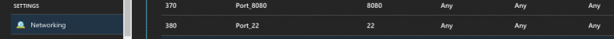
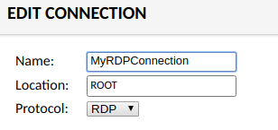
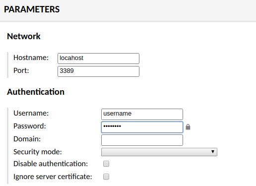

This write up will provide the steps required to install guacamole on a linux VM running in Azure. Guacamole is a web app that provides the ability to remote desktop into machines on your network through a HTML 5 browser.
The first thing you will need is a Ubuntu 18 VM provisioned in Azure. I selected the 2 core 4 GB VM that cost ~ $31 / month. You could probably get away with running it on a small machine, but I chose this so I could also develop on the machine when remoted in.
Once the VM is provisioned ensure the public IP address is configured to static and provide a DNS entry for the IP. The address will look something like yourname.region.cloudapp.azure.com.
Next, to install guacamole and all prerequisites you will have to set up an inbound port to the VM for SSH port 22. From the Networking tab for the VM add the rule for port 22.  With the port open your can now remote in to SSH and install the following. I used PuTTY to remote in, don’t forget the the username and password you created with the VM! Once connected run:After guac-install.sh runs it will display the URL and default admin account. guacadmin:guacadmin and http://localhost:8080/guacamole.
Now that guacamole is setup you will need to connect to it using port 8080. Go back into portal.azure.com and remove the inbound SSH 22 port and add port 8080. With port 8080 open you can now hit the guacamole site.
Use your DNS name or IP address to connect to the guacamole site. You should be prompted with a login screen, enter the default username and password. Update the password in settings. Also from settings click on the Connections tab and add a new connection.
To setup a RDP connection enter in the Name and select RDP for the connection.
Next scroll down to Parameters. Enter localhost for the Hostname. If you have more than one machine on the local network (in Azure virtual network) you could use this instance of guacamole to connect to each machine by creating a connection for each and providing the local machine address for hostname. Since this is a stand alone install and we want to RDP into the same server we'll use localhost. Set RDP port to 3389, this is the default RDP port for xrdp.
Enter in the VMs Username and password under authentication. This is optional. If you don't provide it here then you will be prompted by the OS when RDPing in. If you do provide it you will be automatically logged into the OS. Click save.
Navigate to the Home page and double click the connection to log in.
If you receive error messages logging in, try different browsers. I have had issues on different machines with Chrome and IE. Firefox always seems to work.
Some quick tips: if you want full screen RDPing, try Shift - Alt - Enter or F11 to make your browser full screen. If you want to cut and paste between your VM and local machine use Control - Alt - Shift to get the left menu which will allow you to paste or cut text through the browser, it will also show a menu drop down for other features.